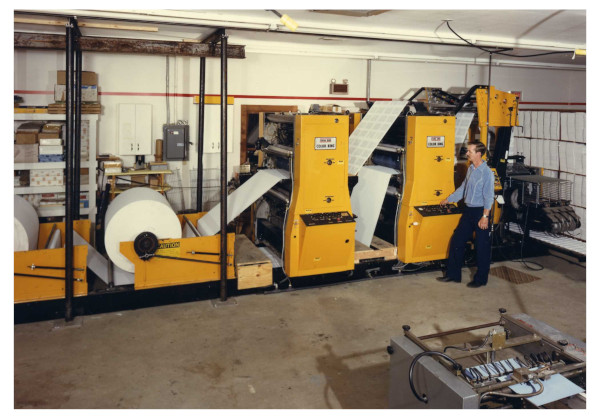

History of Bearing Precious Seed Founded in 1973

Any time God starts something big, He begins with people praying ... expectantly, confidently, affirmatively. It was praying hearts that conceived the idea of a local church Bible printing ministry.
In the late 1960's, Don Fraser planted the seed in the heart of Dr. Charles Keen, pastor of First Baptist Church in Milford. It was a bold idea, almost daring. After all, the American Bible Society had been in existence since 1816, and the Gideons had been ministering in hotels, hospitals and prisons since 1908.
But despite the successes of these organizations, there were more needy believers and unsaved persons than ever before. In fact, in some places where the Bible had been translated, there was only one copy of the Scriptures for every 10,000 people! There was a dire need for more Bibles.
There was another motivation, too. Somewhere in church history, the doctrinal position of Scripture printing was lost. Throughout the Old Testament, scribes faithfully copied the Word of God for future generations. The early church carried on this tradition until the mid-15th century when Gutenberg invented the movable type printing press.
This breakthrough proved to be a blessing and a snare. On one hand, it was now economically advantageous to reproduce many copies of Scripture. Yet, for some reason, the church abdicated this sacred task to the secular world. Eventually, commercialism was the factor behind Bible printing and the world sold copies back to the church! Don Fraser, Dr. Keen, and a handful of others often wondered if this was one of the reasons for so many versions of the Word of God.
Despite the overwhelming odds facing the Ohio church, the small circle of believers felt a kindred spirit about their dream, and by 1973, they were ready. The ministry was called Bearing Precious Seed after the truth found in Psalm 126:6, "He that goeth forth and weepeth, bearing precious seed, shall doubtless come again with rejoicing, bringing his sheaves with him."
The group prayed as though everything depended on God, which it did! They had an old Multigraph 1250 press, a hand-operated cutter (neither tool was designed for the coming task) and a few hundred dollars.
Veteran missionary printer Sam Caudill remembers the press (designed to produce bus flyers and church bulletins) that cranked out the first pages of New Testament Scripture from a basement stairwell closet that stored flannel graphs. Because it was December, the staff affectionately referred to that space as "the stable from which we are giving the Saviour to the world."
The ministry might have remained "in a stable," but several gifted men either gave of themselves sacrificially or persuaded others to support the fledgling undertaking. Along with its founders, Bearing Precious Seed is indebted to Carlos Demarest, Sam Caudill and others of like burden who saw the evident will of God and the ever expanding vision as a call to action.
Piece by piece, the ministry grew. A camera to shoot negatives ... the ability to strip and burn plates ... a 16-page collator ... a tabletop glue binder (7-Up bottles had been used to roll the glue flat!) ... a single-blade cutter for trimming New Testaments ... and finally a binder that could handle 500 New Testaments an hour.
By 1975, Bearing Precious Seed moved out of its basement home and into an adjacent house. Eventually, a 24' X 30' space was added on. That year also saw the last of the Multigraph press. A new A.B. Dick 385 churned out 2,000 New Testaments a week, compared to its predecessor's rate of 1,000 per month. Soon came a folder, followed by another camera and platemaker.
In 1977, the whole English Bible was printed, and eighteen hundred copies were produced and distributed.
Two years later, Bearing Precious Seed purchased a Didde Glaser, a roll press with higher speeds and the ability to print on both sides of the paper. The Scripture tally was now up to 250,000 New Testaments a year.

In 1981, the ministry dedicated a new print shop, and just two short years later replaced its Didde Glaser with a Solna Color King press. In 1995, with the help of local churches and individuals in the U.S and Canada, a state-of-the-art Heidelberg Harris web press was purchased. This press has permitted Bearing Precious Seed to print millions of Scriptures for distribution campaigns in countries such as Cuba, Russia, and Mexico. With each passing year, Bearing Precious Seed was miraculously expanding its capabilities. In 1974, the first full year of production, 12,000 Scripture portions were printed and shipped.